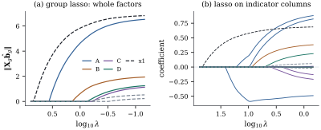

30.3 Group penalties
A factor with
30.3.1. The group lasso
Partition the columns of
For weights
with Euclidean norms
With singleton groups and unit weights this is the
lasso. In general it acts like the lasso across
groups and like ridge within them:
(a) A minimizer of Eq. 30.3.1 exists, and all minimizers have the same fitted vector.
(b) (KKT conditions.)
(c) Let
(d) (Orthonormal groups.) If
(e) (Block update; compare Proposition 30.2.2.) If
Proof.
(a) The penalty is convex and continuous. Since
(b) Combine Lemma 30.1.2 with Lemma 30.1.3, using the groups as the blocks.
(c) At
(d) Under the assumption,
(e) As a function of
Block soft thresholding keeps the direction of the
least squares vector
30.3.2. Factors as groups
Orthonormalizing within groups also makes the group lasso independent of how a factor is coded.
(a) Let
(b) Suppose each group is orthonormalized within itself, so that
Proof.
(a) With
(b) Two orthonormal bases
With orthonormalized groups
The script simulates

import numpy as np
rng = np.random.default_rng(3003)
n = 120
levels = {"A": 4, "B": 3, "C": 5, "D": 3}
factors = {f: rng.integers(0, k, size=n) for f, k in levels.items()}
numeric = rng.normal(size=(n, 3))
effect_A = np.array([0.0, 1.0, -0.5, 0.8])
effect_B = np.array([0.0, 0.3, -0.3])
y = effect_A[factors["A"]] + effect_B[factors["B"]] + 0.6 * numeric[:, 0] + rng.normal(size=n)
y -= y.mean()
def indicator_columns(codes, k, reference=0):
"""Indicator columns for the levels other than the reference level."""
return np.column_stack([(codes == l).astype(float) for l in range(k) if l != reference])
def orthonormal_group(Z):
"""Centre the columns, then an orthonormal basis of their span (Z = Q R)."""
Z = Z - Z.mean(axis=0)
Q, _ = np.linalg.qr(Z)
return Q
def build(reference=0):
blocks = [orthonormal_group(indicator_columns(factors[f], k, reference))
for f, k in levels.items()]
blocks += [orthonormal_group(numeric[:, [j]]) for j in range(3)]
return blocks
def group_lasso(blocks, y, lam, b=None, tol=1e-12, max_sweeps=100000):
"""(1/2)||y - sum_g X_g b_g||^2 + lam sum_g sqrt(p_g) ||b_g||, with X_g'X_g = I."""
b = [np.zeros(Xg.shape[1]) for Xg in blocks] if b is None else [v.copy() for v in b]
r = y - sum(Xg @ bg for Xg, bg in zip(blocks, b))
for _ in range(max_sweeps):
largest = 0.0
for g, Xg in enumerate(blocks):
s = Xg.T @ r + b[g] # block least squares on the partial residual
w = np.sqrt(Xg.shape[1])
norm_s = np.linalg.norm(s)
new = max(0.0, 1 - lam * w / norm_s) * s if norm_s > 0 else 0 * s
r += Xg @ (b[g] - new)
largest = max(largest, np.max(np.abs(new - b[g])))
b[g] = new
if largest < tol:
return b
raise RuntimeError("block coordinate descent did not converge")
blocks = build()
names = list(levels) + ["x1", "x2", "x3"]
lam = 2.0
b = group_lasso(blocks, y, lam)
for name, Xg, bg in zip(names, blocks, b):
print(f"{name}: {Xg.shape[1]} columns, ||X_g b_g|| = {np.linalg.norm(Xg @ bg):.3f}")The sparse group lasso adds an
30.3.3. Ordered coefficients: the fused lasso
When coefficients have a natural order (levels of an ordered factor, successive times), neighbours are expected to be similar. The fused lasso of Tibshirani, Saunders, Rosset, Zhu and Knight (2005) penalizes their differences:
It produces exact zeros and exact ties
30.3.4. Exercises
A. Check your understanding
Under orthonormal groups and
Solution. By Eq. 30.3.3,
B. Practice
Solve the fused lasso Eq. 30.3.4
with
Solution. The penalty is
Under an orthonormal design, compare the group lasso
(one group of size
C. Going deeper
Drop the assumption